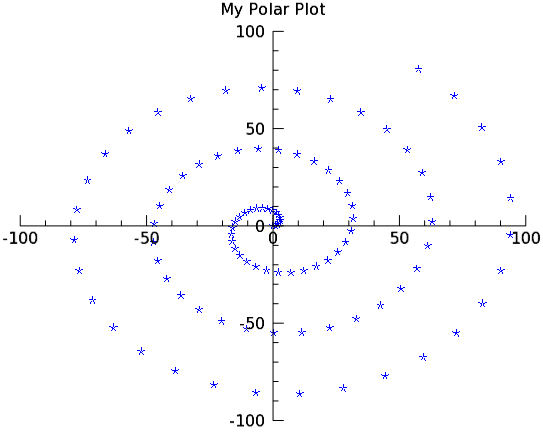

With IDL Graphics, you can display polar plots with the POLARPLOT function. This function requires two vector parameters. The first parameter is the radius, and the second is the angle (expressed in radians). Before the plot displays, these variables are first converted from polar to Cartesian coordinates.

The code shown below creates the graphic shown above. You can copy the entire block and paste it into the IDL command line to run it.
; Make a radius vector.
R = FINDGEN(100)
;Make a vector.
theta = R/5
; Display the polar plot
pplot = POLARPLOT(r, theta, 'b*', TITLE='My Polar Plot')
The line above could also be entered as:
pplot = POLARPLOT(r, theta, $
TITLE='My Polar Plot', COLOR='blue', SYMBOL=2, LINESTYLE=6)